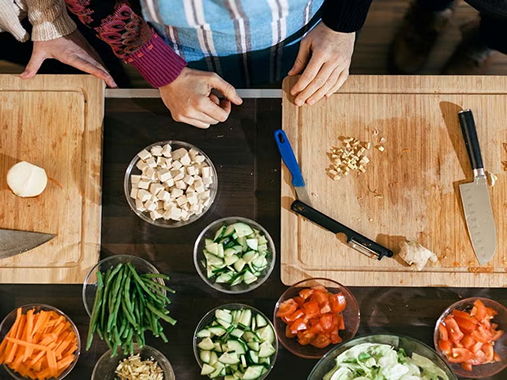

| PASATIEMPOS |
| Mis pasatiempos son el escribir acerca de lo que leo me encanta hacer resúmenes acerca de mis lecturas, reflexionar y aprender sobre mis libros |
| OTROS PASATIEMPOS |
|  |
Un profesional en enfermería (enfermero o enfermera profesional) está autorizado para ofrecer una amplia gama de servicios de atención en salud, los cuales pueden incluir: Tomar la historia clínica del paciente, llevar a cabo un examen físico y ordenar procedimientos y pruebas de laboratorio. Los bailarines mueven el cuerpo al ritmo de la música para interpretar un personaje o escenificar una historia ante una audiencia, o simplemente para entretener. Pueden especializarse en un tipo concreto de danza, como el ballet clásico. ¿Cuáles son las actividades de una cocinera?
Responsabilidades
|